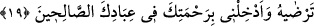

SÜLEYMAN DÂVÛD’A
VÂRİS OLDU
15. Andolsun ki biz, Davud’a ve Süleyman’a ilim verdik. Onlar: Bizi, mü’min
kullarının birçoğundan üstün kılan Allâh’a hamd olsun, dediler.
16. Süleyman Davud’a vâris oldu ve dedi ki: Ey insanlar! Bize kuş dili öğretildi ve
bize her şeyden (nasip) verildi. Doğrusu bu apaçık bir lütuftur.
17. Süleyman’ın cinlerden, insanlardan ve kuşlardan müteşekkil orduları
toplandı; hepsi bir arada (onun tarafından) düzenli olarak sevk ediliyordu.
18. Nihâyet karınca vâdisine geldikleri zaman, bir karınca: Ey karıncalar!
Yuvalarınıza girin; Süleyman ve ordusu farkına varmadan sizi ezmesin! dedi.
19. (Süleyman) onun sözünden dolayı gülümsedi ve dedi ki: Ey Rabbim! Beni,
gerek bana gerekse ana-babama verdiğin nimete şükretmeye ve hoşnut olacağın
iyi işler yapmaya muvaffak kıl. Rahmetinle, beni iyi kulların arasına kat.
“Andolsun” Allah’a yemin olsun “ki biz, Davud’a ve Süleyman’a” yâni onlardan her
birisine “ilim” şer’î esaslardan, hükümlerden, zırh yapma, dağların tesbih etmesi,
kuşlarla ve hayvanlarla konuşma gibi onlardan her birine mahsus diğer şeylerin
ilminden bir bölümünü “verdik.”
Mişkâtü’l-envâr’da der ki: “Bir karınca Süleyman (a.s.)’a: “Ey Allah’ın nebîsi!
Babanın ismi niçin Dâvud, senin ismin de niçin Süleyman oldu, biliyor musun?” dedi.
Süleyman (a.s.): “Hayır” dedi. Karınca: “Çünkü baban kalbini Allah’tan başkasına
iltifat yarasından tedavî ettiği için sevildi. Sen de Selîm’in tasğîri olan Süleym’sin “ yâni “Süleym senin de babana katılma vaktin geldi” anlamına gelir.